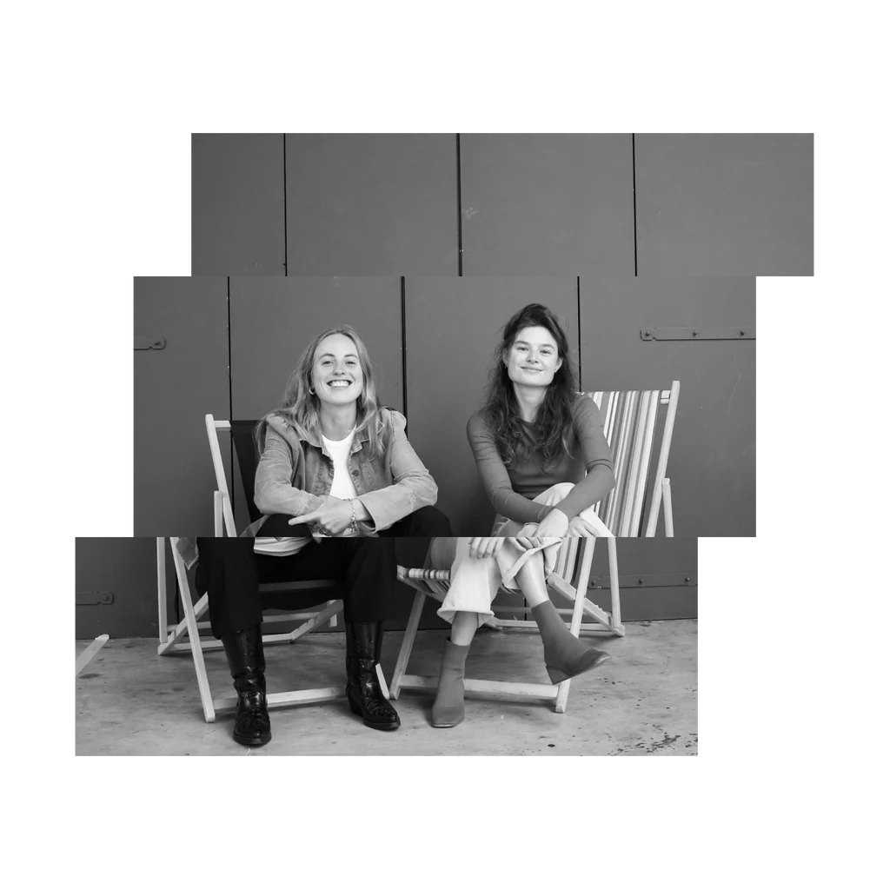
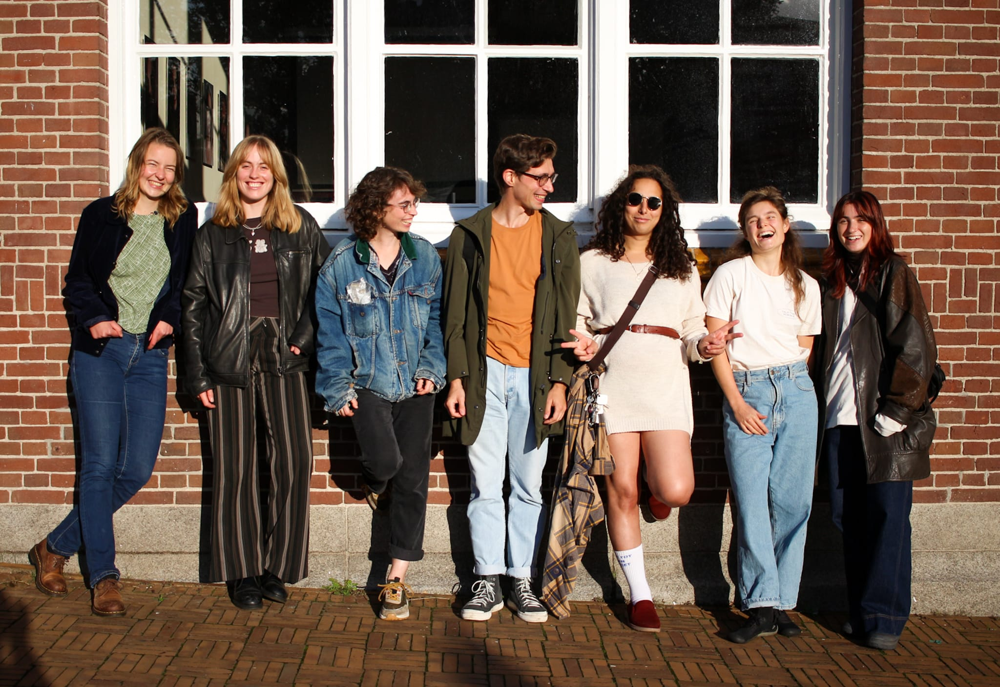
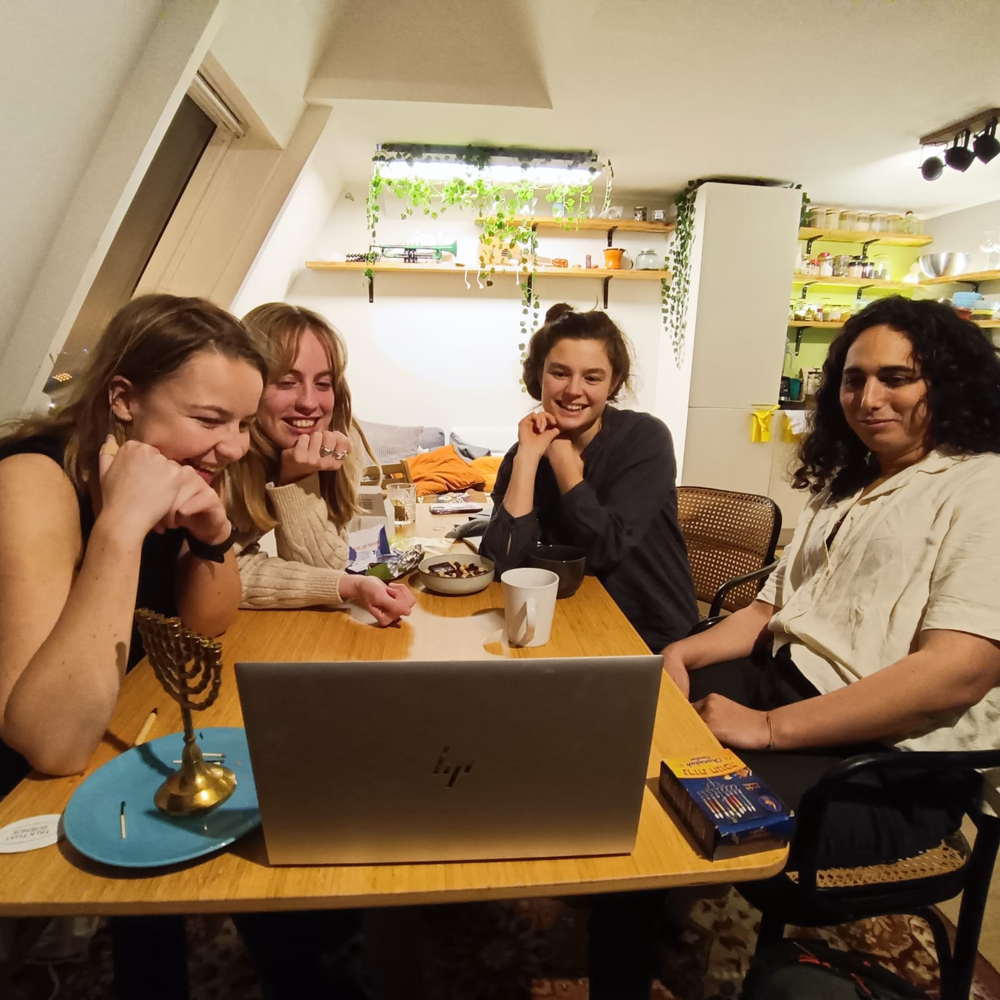

Meet the Team
An interview with the people behind Talk That Science — who they are, why they started the show, and what got them into science in the first place.

Can you introduce yourself to our readers and let them know what you do when not at Echobox?
Let me introduce you to the Talk That Science family, consisting of Nicolien Janssens, Nikki Westeijn, Iris Luden, Evelien Wooning, Mirjam Kooij and Patrik Sestic. We are all students at the University of Amsterdam. Nicolien and Nikki have so far done most of the interviews, Patrik does the editing, Mirjam does finances and Iris and Evelien will soon do their first interviews on Echobox.

Nicolien is currently finishing her masters in logic, and specializing in group decision making from a mathematical and philosophical perspective. Outside of this theoretical stuff, I like trying new hobbies, often having to do with either sports, photography or music. Recently I ran my first half marathon in Ameland — I can really recommend it, running on the beach is great — and currently, I am on a hiking and wild camping trip for one month.
Nikki is also finishing the same masters as Nicolien: Logic. Nikki and Nicolien met when studying for their bachelors in philosophy. Besides studying, I love to go out, which unfortunately we have not been allowed to do a lot for the past few years. To get through the lockdowns, I have taken up knitting, playing the guitar and yoga and I realized I love this kind of stuff. Iris and Patrik also study Logic. Mirjam studies medical science and Evelien studies physics.
Tell us about your show, Talk That Science on Echobox — what's the general idea behind it?
Almost two years ago we combined our passions into a podcast. We noticed that there is a gap when it comes to talking about science in public. Scientists rarely communicate their results to the rest of society and some people have lost interest and trust in science. For this reason, we combined our two biggest passions – science and music – to set up Talk That Science with the aim to give science a place in public radio and podcasts. By opening up conversations with scientists in combination with music, we hope to make science accessible for everyone. We also do this by not only inviting senior scientists, but also students and people from our age in order to make the discussions more relatable. We started as a podcast and we are now live on Echobox radio every month since August.
What effect did community radio (past and present) have on your life?
Community radio is a great way to make sharing passion and expertise accessible to anyone. The accessibility goes in two directions: as a listener the makers are more accessible, and as a maker, well, starting to broadcast is more accessible. For example, the guys from the Interference Patterns show at Echobox approached us a while ago. They planned to make a show about music of the future. They listened to our show and thought that from a science perspective, we might have some ideas on what the music of the future would look like. We met in a cafe to brainstorm about the idea, that was real fun! I think this is something that can only happen with community radio, because you feel like a community that makes something together. What we also like about community radio is that we really feel that we are addressing a specific crowd, a crowd where we feel comfortable to be ourselves and a crowd that we want to make enthusiastic about science.

What made each of you pursue science and what do you specialize in?
Nicolien: As I pointed out already in the first question, I am specialized in group decision making from a mathematical and philosophical perspective. I find the force as well as the weaknesses of groups fascinating, and there are many surprising examples beyond humans where organisms communicate with each other to survive. For instance, trees communicate with each other over huge distances through fungi. They warn each other, and donate food to each other. And herrings communicate through each other by farting. If a majority of the group farts, then, well maybe not surprising, it means that there is some danger and they have to flee.
Nikki: As I mentioned in our introductory show on Echobox, many people in my family have been to university. I am conscious that I come from a privileged background in this respect. It made going into academia a natural step for me, but also made me very enthusiastic about it. I think that learning new things is one of the most fun things in life. I am interested in all sorts of areas like language, history and neuroscience, but eventually I chose to study philosophy for my bachelors. I love the open-minded perspective you are required to take when you study philosophy and the fact that it overlaps with many different disciplines. I also in general really like people that study philosophy (we also learned that two of the Echobox founders once studied it!). The masters in Logic that I now do is very interdisciplinary which also suits me. Logic relates to mathematics, philosophy, artificial intelligence and logic can be used for any area in which we are required to apply systematic thinking and rules of inference.
I am currently especially interested in the philosophy of physics. There are many phenomena that are studied by physics that can be subject to philosophical debate, such as the direction of time of the universe. I did my first Talk That Science interview about the philosophy of time. Physicists use mathematics to study phenomena but are rarely required to think about what the mathematical formulas mean. That's why I love the combination between philosophy and physics and I think it should be done more. One reason why I love Talk That Science is that it also brings different disciplines together which can lead to new interesting perspectives. For example, in one of the shows at Echobox we invited a philosopher and a lawyer to discuss the concept of causality from both perspectives. It was really interesting and it seemed like both guests learned a lot from each other.
Evelien: I have always been curious and I tend to get very fascinated by things I don't understand. Moreover, I find the way in which science innovates and comes up with solutions for seemingly impossible problems really cool and important. The physics field has a big role to play in, for example, the energy transition and cyber security. This motivated me to go into science.
What is your favorite fact of all time?
Nicolien: My favorite science fact is the one I already highlighted in our first Echobox episode. It is the Condorcet Jury Theorem. It is a mathematical theorem that proves that groups of people are always smarter than the individuals that compose them. From a scientific perspective I like it because it combines formal mathematics with a societal issue. From a practical perspective, it gives me courage to believe that although we are with so many people in the world, together we are able to find good solutions for living together.
Nikki: The fact that time will pass more slowly if you travel at high speed. This is one of the things you learn in physics when you study Einstein's relativity theory of time. If two twins would be separated such that one of them stays at home and the other will move in a rocket ship around the earth at very high speed, the twin in the rocket ship will be younger than the one who stayed on earth. This thought experiment is known as the Twin-Earth experiment (look it up if you want to understand it!). The relativity of time always puzzles me which is why I love it so much!
Evelien: The observer effect in quantum mechanics. It means that, just by the effect of observation/measurement, particles behave differently than they would if they had not been observed at that particular moment in time. It mathematically makes sense in a probabilistic way, but that this effect can really be experimentally shown really blows my mind.
If you could create a person from a computer like the 1985 cult classic Weird Science, who would you create?
Gandalf, because then the regular laws of science would not apply anymore and we could start exploring a whole new world of magic.
An Instagram Q&A with Amity Aharoni, the show's host
@uva_science (the University of Amsterdam's Science faculty) sat down with current host Amity Aharoni to talk about hosting the show.
Who are you and what do you study or do as work?
"My name is Amity, I am a third year student of the Master of Logic and specifically, I am doing pure mathematics and AI. I work in a company where we work on natural language processing for medical technologies. And I am doing the Talk That Science show."
Why did you want to host Talk That Science?
"I always wanted to do science communication, in particular, because there is not a lot of queer representation in the field right now. The set of tools you need to start doing science communication is really large — since I joined a radio show there is an entire framework to support this. I am very happy about this position."
What is it like to host the Talk That Science radio show?
"It's two emotions at the same time for me. It's a lot of nervousness because you try to replicate a natural conversation while also being aware of conducting the interview in a way that the listener will understand. Another feeling I have is energized, every time I come out of a show with so much energy — it's very empowering to do this."
How do you prepare speaking with researchers from diverse backgrounds?
"I think that each researcher is different and requires their own set of attention. Particularly one thing I pay attention to as the host is how to adjust the content of each episode to fill the mold of the researcher. Each episode needs its own special care."
What is the role of your show for science communication?
"The way that people often experience bèta sciences is as a harsh environment. And I think this is sad because the way that scientists interact with literature is so joyful. Science communication is a method to make people understand you can enjoy science. Science cannot only be for scientists, it needs to be for everyone. Although the topics are complicated, we make it approachable for people, which is important."